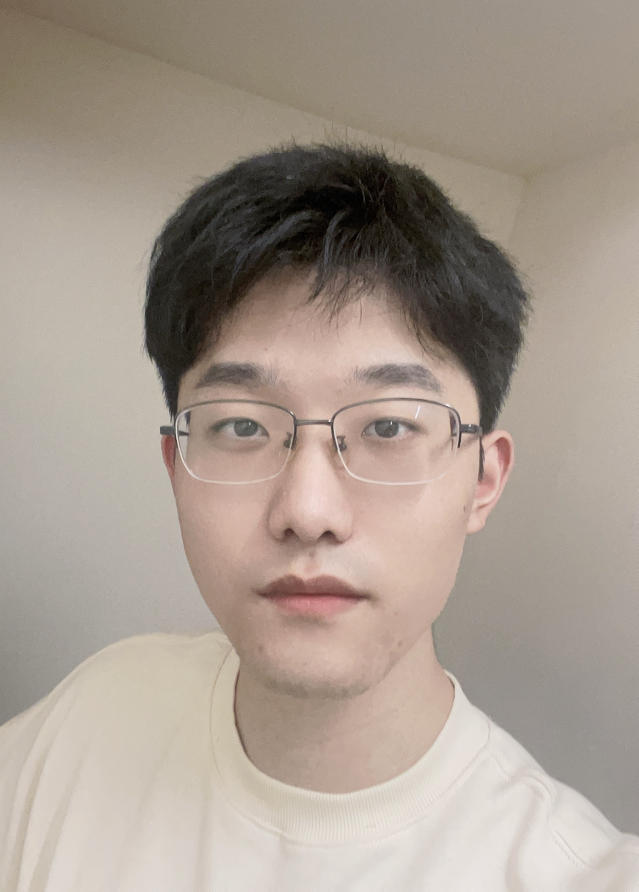
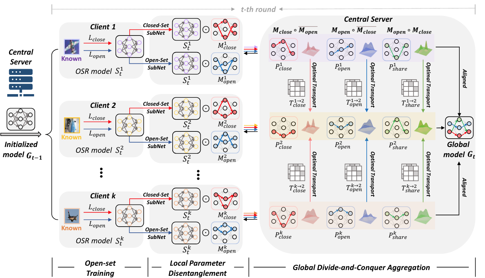
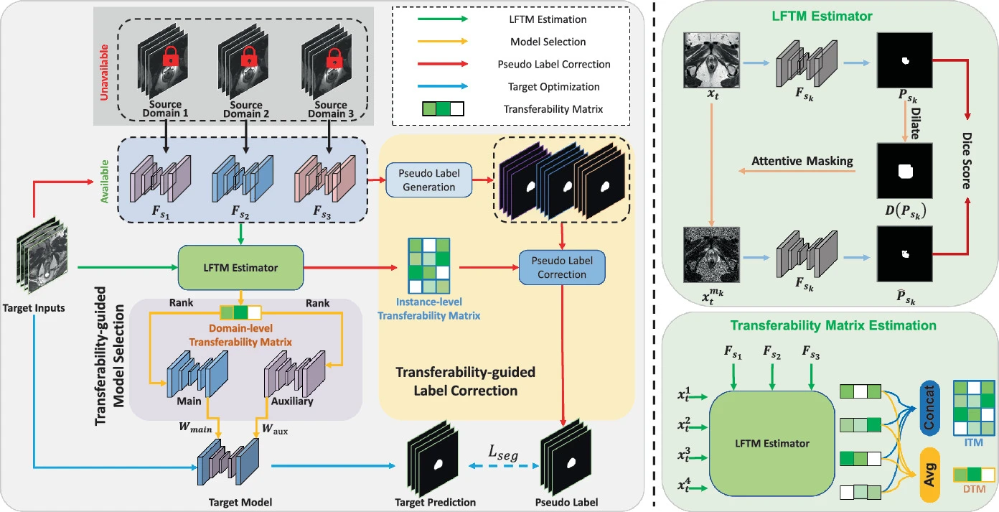
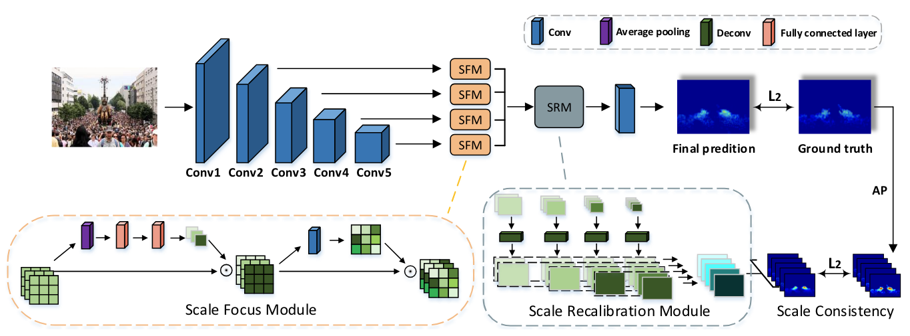

Yifan LiuPh.D. Student
Department of Electronic Engineering, |
 |
About Me
I am currently a third year (2023.01-) Ph.D. student in the Department of Electronic Engineering, Chinese University of Hong Kong (CUHK), supervised by Prof. Yixuan Yuan. Before that, I received B. Eng. degree in Electronic Information Engineering from the Huazhong University of Science and Technology(HUST) in 2021.
I'm currently working on the medical image analysis, with a focus on 3D reconstruction and 3D point cloud analysis.
News
[06/2024] Three more papers accepted by MICCAI2024.
[05/2024] One paper accepted by MICCAI2024 (early accept, 14%).
[07/2023] One paper accepted by ICCV23.
[06/2023] Pass the Ph.D. Qualify Examination.
[05/2023] One paper accepted by MICCAI2023 (early accept, 14%).
[03/2023] One paper accpeted by IEEE TMI 2023. (IF. 11.037).
[07/2022] One paper accepted by IEEE JBHI 2022. (IF.5.772).
[06/2022] One paper accepted by MICCAI 2022 (early accept, 14%).
[06/2021] I graduate from the School of EIE in HUST and receive B.Sc. degree.
Publications
Preprint:
-
EndoGaussian: Gaussian Splatting for Deformable Surgical Scene Reconstruction
Yifan Liu*, Chenxin Li*, Chen Yang, Yixuan Yuan.
arXiv preprint 2024
[Paper] [Code] [Project]
Journal:
-

GRAB-Net: Graph-based Boundary-aware Network for Medical Point Cloud Segmentation
Yifan Liu, Wuyang Li, Jie Liu, Hui Chen, Yixuan Yuan.
IEEE Transactions on Medical Imaging (IEEE TMI),2023.
[Paper] [Code]
-
Dynamic Depth-Aware Network for Endoscopy Super-Resolution
Wenting Chen, Yifan Liu, Jiancong Hu, Yixuan Yuan.
IEEE Journal of Biomedical and Health Informatics (IEEE JBHI),2022.
[Paper]
Conference:
-
When 3D Partial Points Meets SAM: Tooth Point Cloud Segmentation with Sparse Labels
Yifan Liu, Wuyang Li, Cheng Wang, Hui Chen, Yixuan Yuan.
International Conference on Medical Image Computing and Computer Assisted Intervention (MICCAI 2024 early accept)
[Paper]
-
LGS: A Light-weight 4D Gaussian Splatting for Efficient Surgical Scene Reconstruction
Hengyu Liu*, Yifan Liu*, Chenxin Li*, Wuyang Li, Yixuan Yuan.
International Conference on Medical Image Computing and Computer Assisted Intervention (MICCAI 2024)
[Paper]
-

Endora: Video Generation Models as Endoscopy Simulators
Chenxin Li*, Hengyu Liu*, Yifan Liu*, Brandon Y. Feng, Wuyang Li, Xinyu Liu, Zhen Chen, Jing Shao, Yixuan Yuan.
International Conference on Medical Image Computing and Computer Assisted Intervention (MICCAI 2024)
[Paper] [Code] [Project]
-
 FedPD: Federated Open Set Recognition with Parameter Disentanglement.
Chen Yang, Meilu Zhu, Yifan Liu, Yixuan Yuan.
International Conference on Computer Vision 2023 (ICCV 2023)
[Paper] [Code]
-
 Transferability-guided Multi-source Model Adaptation for Medical Image Segmentation.
Chen Yang, Yifan Liu, Yixuan Yuan. (Early accept)
International Conference on Medical Image Computing and Computer Assisted Intervention (MICCAI 2023)
[Paper] [Code]
-
Edge-oriented Point-cloud Transformer for 3D Intracranial Aneurysm Segmentation
Yifan Liu, Jie Liu, Yixuan Yuan. (Early accept)
International Conference on Medical Image Computing and Computer Assisted Intervention (MICCAI 2022 early accept)
[Paper] [Code]
-
 Crowd Counting via Hierarchical Scale Recalibration Network
Zhikang Zou*, Yifan Liu*, Shuangjie Xu, Wei Wei, Shiping Wen, Pan Zhou. (* indicates equal contribution)
European Conference on Artificial Intelligence (ECAI 2020)
[Paper]
Selected Awards
Haihang Scholarship, 2020
Self-Reliance Scholarship, 2019-2020
Scholarship of Academic Excellence, 2017-2020
Outstanding Graduates of Huazhong University of Science and Technology, 2021
Teaching
ENGG1130: Multivariable Calculus for Engineers, 2023 Spring, CUHK.
ENGG2760: Probability for Engineers, 2023 Fall, CUHK.
ELEG4512: Digital Image Processing, 2024 Spring, CUHK.
Services
Conference Reviewer: ECCV'23, ACM MM'23, ECAI'23, 3DV'23, MICCAI'23.
Journal Reviewer: TMI, TCSVT